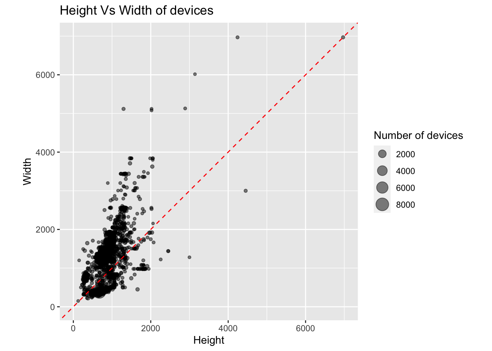
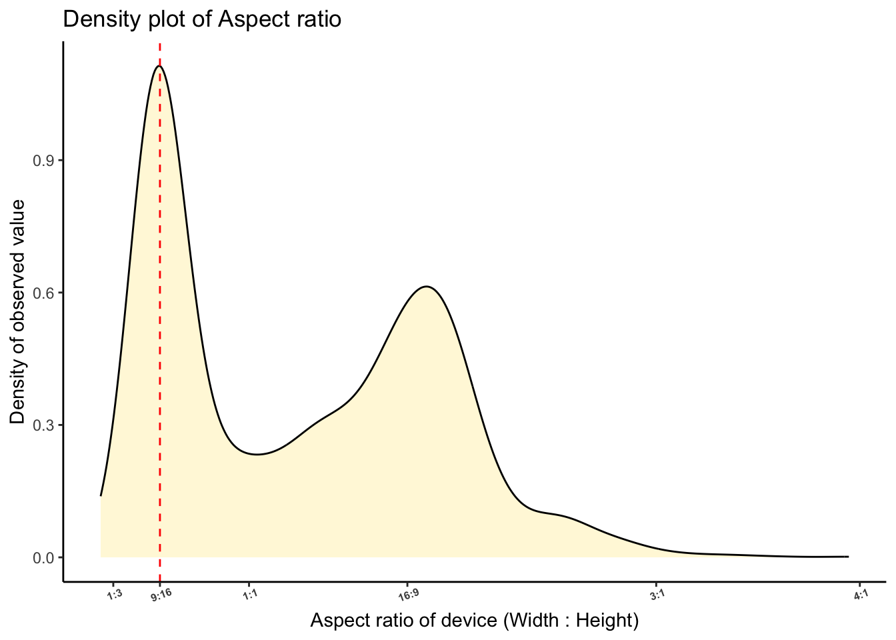

Rows: 2,291
Columns: 3
$ Width <dbl> 390, 393, 375, 390, 393, 414, 375, 428, 375, 375, 430, 412, 390…
$ Height <dbl> 670, 666, 635, 664, 660, 721, 641, 752, 559, 629, 746, 783, 663…
$ Count <dbl> 8691, 4800, 4618, 2503, 2318, 2130, 1890, 1692, 1643, 1393, 123…Q1
Exercise 1
Data from a recent study of viewports can be found in the data set viewports.csv. The purpose of the data collection was to you simply do not know how users are going to visit your website or web app. Instead of making design decisions on strict, limited breakpoints, keep in mind the sheer amount of fragmentation there is in viewports. The data was collected primarily from the USA and Europe, on 122,321 devices. Below is a glimpse of the data. It has three columns defining the width and height of the screen, and count is the number of devices with these dimensions.
Question A
How many variables in this data and what type are they?
Answer A
We observe a total of 3 variables. Each of these variables are of the “Double” datatype which implies that they are numerical values and are continuous in nature.
Question B
Based on the description above, and the variables available in the data, posit two open-ended questions that might be interesting to answer with the data.
Answer B
Based on the description above, following are the open-ended questions which may be interesting to answer:
- Does the data suggest if users prefer a relatively narrow devices (such as smartphones) and whether wide devices (such as tablets) are abundant enough among users to account for any necessary website dimensional changes ?
- Is there a popular dimensional ratio of devices (Width:Height) which users prefer ?
- Is there a need to create an application which standardises the viewport for the device in which, the application has been installed ?
Question C
Create a bubble scatterplot, where size represents the count, with an x=y guideline underlying the points. Describe what you learn about viewport sizes from this plot.
Answer C
pl1 <- ggplot(data = v %>% drop_na(),aes(x = Height,y = Width,size=Count)) + geom_point(alpha = 0.5) + theme(aspect.ratio = 1) + lims(x = c(0,7000),y = c(0,7000)) + ggtitle("Height Vs Width of devices") + labs(size = "Number of devices")
pl1
Figure 1 illustrates a scatter plot of the height and width of the devices alongwith number of users reporting these dimensions which has been illustrated through the size of the scatter plots.
üí°üîç Upon analysing the above plot, we can observe that
- The majority of devices are within the height and width values of 2000 mm.
- On the other hand, the combination of height and width of the devices larger 4000 mm are very few.
- Devices with widths greater than 2000 mm tend to have lower values of height (generally less than 1500 mm) than their corresponding width.
- Beyond the width values of 2000 mm, there are negligible number of square displays (Width = Height).
- A square display with height and width values of 7000 mm can be observed which is a rare choice among the users.
This suggests that majority of the viewport sizes range between 0-2000 mm. The number of users with viewport sizes higher than 4000 mm are very low in number.
Question D
Make a transformation of the data to create a new variable, aspect_ratio, based on Width and Height, that will allow you to explain the sizes in one of the conventional terms eg 16:9. (Note: use width:height definition of aspect ratio.)
v <- v %>% mutate(aspect_ratio = Width/Height)
Question E
Show the aspect ratio as a density plot, where the x axis labels correspond to particular ratios, “1:3”, “9:16”, “1:1”, “16:9”, “3:1”. (Note: Remember that the data is aggregated already, so that Count needs to the incorporated into computing the density. Setting the axis limits to between 0 and 4 is helpful, too.) Describe the distribution and explain what you learn.
axis_labels <- c("1:3","9:16","1:1","16:9","3:1","4:1")
pl2 <- ggplot(data = v %>% filter(aspect_ratio<4), aes(x = aspect_ratio)) + geom_density(fill = "cornsilk") + theme_classic() + labs(x = "Aspect ratio of device (Width : Height)",y = "Density of observed value") + ggtitle("Density plot of Aspect ratio") +
lims(x = c(0,4)) +
scale_x_continuous(labels = axis_labels,breaks = c(1/3,9/16,1,16/9,3/1,4/1)) +
theme(axis.text.x = element_text(angle = 20,size = 6,face = 'bold'))
pl2
Question F
What is the most frequent aspect ratio? What (type of) device does this correspond to? (Note: You’ll need to do some web searching.)
Answer F
Figure 2 illustrates the various aspect ratios of the devices reported by the users. We can observe that the density plot is bi-modal in nature with peaks occuring around the aspect ratio of “9:16” and the other peak at “16:9”.
Upon referring to the general aspect ratio of devices here, we can make the following inferences.
Aspect ratio of 9:16 : Typical smartphones used in mid-late 2010s üì±
Aspect ratio of 16:9 : Typical computer monitor screens üñ•Ô∏è